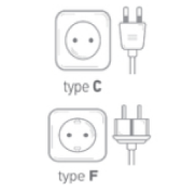

Europa
In europa vindt je het meest de stekkers: C, E, F & J(Zwitserland). Deze stekkers passen allemaal veilig in het stopcontact.
Let er op dat als je naar Zwitserland op vakantie gaat dat je dan wel een reisstekker van het type J nodig hebt.
In Europa worden verschillende stopcontacten en stekkersystemen gebruikt, wat betekent dat reizigers soms een reisstekker
nodig hebben. De meest voorkomende stekkertypen zijn type C, E en F. In veel landen, zoals Nederland, Duitsland en Frankrijk,
wordt type C (de twee ronde pinnen) veel gebruikt. Type E en F lijken op elkaar en worden vaak gevonden in landen zoals
België, Polen en Spanje.

Nederland
In Nederland worden de type C & F stopcontacten het meest gebruikt.

België
In België wordt het type E stopcontact het meest gebruikt.

Luxemburg
In Luxemburg wordt het type F stopcontact het meest gebruikt.
Duitsland
In Duitsland wordt het type F stopcontact het meest gebruikt.
Polen
In Polen wordt het type E stopcontact het meest gebruikt.
Frankrijk
In Frankrijk wordt het type E stopcontact het meest gebruikt.
Spanje
In Spanje wordt het type F stopcontact het meest gebruikt.
Andorra
In Andorra wordt het type F stopcontact het meest gebruikt.
Portugal
In Portugal wordt het type F stopcontact het meest gebruikt.

Tsjechië
In Tsjechië worden de type C & E stopcontacten het meest gebruikt.
Zwitserland
In Zwitserland worden de type C & J stopcontacten het meest gebruikt.

Engeland
In Engeland wordt het type G stopcontact het meest gebruikt.
Rusland
In Rusland worden de type C & F stopcontacten het meest gebruikt.